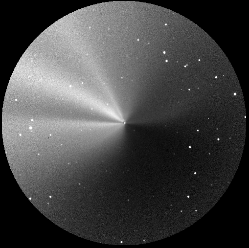

The brightness of the coma (or "hair") of a comet that is smoothly, continuously active will drop as the inverse of the distance to the nucleus (i.e., as 1/rho). So, to enhance the deviations from a smooth coma such as jets, we divided the original image by a model representing a perfectly uniform comet with a 1/rho coma.
It is interesting to note that the jets and fans visible in November as quite similar to those we observed in September.
Fri Dec 6 17:10:02 1996